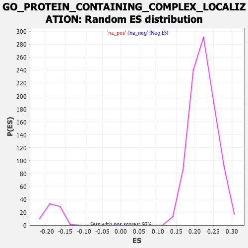

| | | Dataset | Recurrence |
| Phenotype | NoPhenotypeAvailable |
| Upregulated in class | na_neg |
| GeneSet | GO_PROTEIN_CONTAINING_COMPLEX_LOCALIZATION |
| Enrichment Score (ES) | -0.35045376 |
| Normalized Enrichment Score (NES) | -1.9111439 |
| Nominal p-value | 0.0 |
| FDR q-value | 0.21300316 |
| FWER p-Value | 0.926 |
Table: GSEA Results Summary
 Fig 1: Enrichment plot: GO_PROTEIN_CONTAINING_COMPLEX_LOCALIZATION
Fig 1: Enrichment plot: GO_PROTEIN_CONTAINING_COMPLEX_LOCALIZATION
Profile of the Running ES Score & Positions of GeneSet Members on the Rank Ordered List
| SYMBOL | RANK IN GENE LIST | RANK METRIC SCORE | RUNNING ES | CORE ENRICHMENT | | 1 | GHSR | 561 | 1.877 | -0.0194 | No |
| 2 | THOC1 | 941 | 1.645 | -0.0306 | No |
| 3 | NUP107 | 970 | 1.634 | -0.0235 | No |
| 4 | NUP133 | 1189 | 1.536 | -0.0269 | No |
| 5 | U2AF1L4 | 1231 | 1.519 | -0.0212 | No |
| 6 | IFT80 | 1326 | 1.480 | -0.0184 | No |
| 7 | NOP9 | 1327 | 1.480 | -0.0107 | No |
| 8 | SMG1 | 1572 | 1.395 | -0.0161 | No |
| 9 | BBS12 | 1661 | 1.368 | -0.0136 | No |
| 10 | IFT57 | 1893 | 1.291 | -0.0189 | No |
| 11 | DDX19A | 1950 | 1.280 | -0.0152 | No |
| 12 | DNM2 | 2070 | 1.249 | -0.0149 | No |
| 13 | RCC2 | 2200 | 1.218 | -0.0153 | No |
| 14 | NACC2 | 2224 | 1.214 | -0.0102 | No |
| 15 | CACNG7 | 2368 | 1.179 | -0.0115 | No |
| 16 | NPM1 | 2386 | 1.175 | -0.0063 | No |
| 17 | SEC13 | 2784 | 1.091 | -0.0212 | No |
| 18 | USP46 | 2975 | 1.055 | -0.0256 | No |
| 19 | NDC1 | 2977 | 1.054 | -0.0202 | No |
| 20 | GSG1L | 2978 | 1.054 | -0.0147 | No |
| 21 | SSX2IP | 3111 | 1.029 | -0.0163 | No |
| 22 | DNM1 | 3171 | 1.020 | -0.0140 | No |
| 23 | UPF1 | 3358 | 0.985 | -0.0186 | No |
| 24 | LSG1 | 3423 | 0.972 | -0.0169 | No |
| 25 | SCRIB | 3454 | 0.965 | -0.0134 | No |
| 26 | PURA | 3558 | 0.948 | -0.0139 | No |
| 27 | TTC21A | 3620 | 0.936 | -0.0122 | No |
| 28 | SRSF4 | 3722 | 0.922 | -0.0126 | No |
| 29 | AKAP8L | 3727 | 0.921 | -0.0081 | No |
| 30 | SNAPIN | 3880 | 0.894 | -0.0113 | No |
| 31 | DRD3 | 3903 | 0.889 | -0.0079 | No |
| 32 | FIP1L1 | 4098 | 0.859 | -0.0135 | No |
| 33 | EIF6 | 4103 | 0.858 | -0.0092 | No |
| 34 | SEH1L | 4328 | 0.825 | -0.0166 | No |
| 35 | SMG6 | 4347 | 0.821 | -0.0133 | No |
| 36 | RABL2B | 4506 | 0.801 | -0.0173 | No |
| 37 | MX2 | 4538 | 0.796 | -0.0148 | No |
| 38 | CACNG3 | 4553 | 0.793 | -0.0114 | No |
| 39 | ATM | 4556 | 0.792 | -0.0074 | No |
| 40 | CEP131 | 4685 | 0.773 | -0.0101 | No |
| 41 | SRSF11 | 4780 | 0.759 | -0.0110 | No |
| 42 | MX1 | 4788 | 0.758 | -0.0074 | No |
| 43 | STX7 | 4795 | 0.756 | -0.0038 | No |
| 44 | EPS15 | 5081 | 0.714 | -0.0149 | No |
| 45 | NUP54 | 5455 | 0.663 | -0.0309 | No |
| 46 | DLG2 | 5511 | 0.655 | -0.0303 | No |
| 47 | SNAP47 | 5516 | 0.655 | -0.0271 | No |
| 48 | GPC4 | 5664 | 0.635 | -0.0315 | No |
| 49 | ATR | 5757 | 0.624 | -0.0330 | No |
| 50 | NUP62 | 5827 | 0.615 | -0.0334 | No |
| 51 | UPF3B | 5848 | 0.613 | -0.0313 | No |
| 52 | POLR2D | 5859 | 0.612 | -0.0286 | No |
| 53 | PABPN1 | 5956 | 0.600 | -0.0305 | No |
| 54 | RAB11A | 6354 | 0.550 | -0.0483 | No |
| 55 | CALY | 6492 | 0.534 | -0.0526 | No |
| 56 | YTHDC1 | 6534 | 0.529 | -0.0520 | No |
| 57 | EXOC3L1 | 6550 | 0.527 | -0.0501 | No |
| 58 | SARNP | 6641 | 0.516 | -0.0521 | No |
| 59 | XPO1 | 6729 | 0.505 | -0.0540 | No |
| 60 | THOC6 | 6769 | 0.500 | -0.0534 | No |
| 61 | THOC7 | 6823 | 0.495 | -0.0536 | No |
| 62 | DNM3 | 6918 | 0.481 | -0.0560 | No |
| 63 | RALB | 6997 | 0.469 | -0.0576 | No |
| 64 | SRSF6 | 7032 | 0.465 | -0.0570 | No |
| 65 | TYROBP | 7043 | 0.464 | -0.0551 | No |
| 66 | NUP205 | 7064 | 0.461 | -0.0537 | No |
| 67 | BIRC5 | 7120 | 0.455 | -0.0542 | No |
| 68 | NUP98 | 7313 | 0.434 | -0.0619 | No |
| 69 | RPS15 | 7500 | 0.413 | -0.0695 | No |
| 70 | EXOC3L4 | 7592 | 0.400 | -0.0721 | No |
| 71 | MCM3AP | 7612 | 0.398 | -0.0710 | No |
| 72 | PCID2 | 7625 | 0.396 | -0.0696 | No |
| 73 | NETO1 | 7686 | 0.389 | -0.0707 | No |
| 74 | TTC26 | 7965 | 0.359 | -0.0833 | No |
| 75 | EZR | 8077 | 0.344 | -0.0873 | No |
| 76 | LGI1 | 8114 | 0.340 | -0.0874 | No |
| 77 | EIF5A | 8160 | 0.336 | -0.0880 | No |
| 78 | CHTOP | 8181 | 0.334 | -0.0873 | No |
| 79 | SRSF1 | 8229 | 0.328 | -0.0880 | No |
| 80 | EIF4A3 | 8309 | 0.320 | -0.0905 | No |
| 81 | KIF17 | 8322 | 0.318 | -0.0894 | No |
| 82 | IFT20 | 8365 | 0.313 | -0.0900 | No |
| 83 | C12orf50 | 8449 | 0.305 | -0.0927 | No |
| 84 | IFT27 | 8517 | 0.299 | -0.0947 | No |
| 85 | NSG1 | 8565 | 0.295 | -0.0956 | No |
| 86 | LCA5L | 8586 | 0.293 | -0.0951 | No |
| 87 | NCBP2 | 8621 | 0.289 | -0.0954 | No |
| 88 | MIOS | 8733 | 0.277 | -0.0997 | No |
| 89 | RNPS1 | 8784 | 0.271 | -0.1009 | No |
| 90 | TRAF3IP1 | 8803 | 0.269 | -0.1004 | No |
| 91 | NPTN | 8891 | 0.260 | -0.1036 | No |
| 92 | CACNG8 | 9023 | 0.245 | -0.1091 | No |
| 93 | NUP214 | 9087 | 0.237 | -0.1112 | No |
| 94 | EXOC3L2 | 9513 | 0.190 | -0.1323 | No |
| 95 | EXOC1 | 9605 | 0.180 | -0.1361 | No |
| 96 | IFT43 | 9625 | 0.177 | -0.1361 | No |
| 97 | SFPQ | 9640 | 0.176 | -0.1360 | No |
| 98 | VPS35 | 9644 | 0.175 | -0.1352 | No |
| 99 | NXF5 | 9736 | 0.166 | -0.1391 | No |
| 100 | SHISA6 | 9911 | 0.149 | -0.1473 | No |
| 101 | NUP155 | 9948 | 0.145 | -0.1485 | No |
| 102 | MAGOH | 9986 | 0.141 | -0.1496 | No |
| 103 | NUP160 | 10018 | 0.138 | -0.1505 | No |
| 104 | IFT52 | 10113 | 0.126 | -0.1548 | No |
| 105 | NUP50 | 10122 | 0.125 | -0.1545 | No |
| 106 | MAPK10 | 10141 | 0.123 | -0.1548 | No |
| 107 | XPOT | 10228 | 0.114 | -0.1587 | No |
| 108 | CACNG5 | 10426 | 0.092 | -0.1685 | No |
| 109 | ADAM10 | 10506 | 0.084 | -0.1721 | No |
| 110 | HPCA | 10528 | 0.081 | -0.1728 | No |
| 111 | TRIP11 | 10654 | 0.067 | -0.1790 | No |
| 112 | NUMB | 10692 | 0.064 | -0.1805 | No |
| 113 | NUP88 | 10792 | 0.051 | -0.1854 | No |
| 114 | SMG7 | 10814 | 0.049 | -0.1863 | No |
| 115 | WDR33 | 10981 | 0.030 | -0.1947 | No |
| 116 | CPSF4 | 10993 | 0.028 | -0.1952 | No |
| 117 | SYMPK | 11063 | 0.021 | -0.1986 | No |
| 118 | CDC40 | 11079 | 0.020 | -0.1993 | No |
| 119 | IFT140 | 11108 | 0.017 | -0.2007 | No |
| 120 | EIF4E | 11113 | 0.017 | -0.2008 | No |
| 121 | DLG4 | 11172 | 0.009 | -0.2038 | No |
| 122 | ARC | 11208 | 0.005 | -0.2056 | No |
| 123 | FKBP4 | 11427 | -0.020 | -0.2168 | No |
| 124 | CPSF3 | 11452 | -0.023 | -0.2179 | No |
| 125 | TTC30A | 11513 | -0.029 | -0.2209 | No |
| 126 | LCA5 | 11519 | -0.030 | -0.2210 | No |
| 127 | GRIPAP1 | 11660 | -0.045 | -0.2280 | No |
| 128 | OPHN1 | 11665 | -0.045 | -0.2280 | No |
| 129 | SRRM1 | 11683 | -0.048 | -0.2286 | No |
| 130 | TNPO1 | 11761 | -0.058 | -0.2323 | No |
| 131 | SSNA1 | 11841 | -0.068 | -0.2361 | No |
| 132 | RAP1A | 11871 | -0.072 | -0.2372 | No |
| 133 | POLDIP3 | 11905 | -0.075 | -0.2385 | No |
| 134 | SMAD7 | 11982 | -0.085 | -0.2421 | No |
| 135 | ITGB3 | 12050 | -0.093 | -0.2450 | No |
| 136 | SGCD | 12062 | -0.095 | -0.2451 | No |
| 137 | ALYREF | 12190 | -0.110 | -0.2512 | No |
| 138 | GPHN | 12195 | -0.110 | -0.2508 | No |
| 139 | ZDHHC3 | 12269 | -0.120 | -0.2540 | No |
| 140 | TPR | 12270 | -0.120 | -0.2533 | No |
| 141 | RPGR | 12453 | -0.141 | -0.2621 | No |
| 142 | STXBP6 | 12596 | -0.157 | -0.2686 | No |
| 143 | U2AF2 | 12680 | -0.168 | -0.2721 | No |
| 144 | TTC21B | 12719 | -0.173 | -0.2731 | No |
| 145 | PCM1 | 12741 | -0.176 | -0.2733 | No |
| 146 | MAGOHB | 12820 | -0.186 | -0.2764 | No |
| 147 | GLE1 | 12848 | -0.189 | -0.2768 | No |
| 148 | TNFAIP2 | 13014 | -0.215 | -0.2843 | No |
| 149 | CLUAP1 | 13113 | -0.229 | -0.2882 | No |
| 150 | HNRNPA2B1 | 13194 | -0.236 | -0.2911 | No |
| 151 | KIF5A | 13207 | -0.238 | -0.2905 | No |
| 152 | SDAD1 | 13222 | -0.240 | -0.2900 | No |
| 153 | AGFG1 | 13351 | -0.259 | -0.2953 | No |
| 154 | NXF1 | 13379 | -0.262 | -0.2954 | No |
| 155 | HHEX | 13398 | -0.264 | -0.2949 | No |
| 156 | CPSF2 | 13422 | -0.269 | -0.2947 | No |
| 157 | RAN | 13442 | -0.271 | -0.2943 | No |
| 158 | ENY2 | 13552 | -0.286 | -0.2985 | No |
| 159 | KIFAP3 | 13605 | -0.294 | -0.2997 | No |
| 160 | IFT74 | 13776 | -0.317 | -0.3068 | No |
| 161 | IWS1 | 13789 | -0.319 | -0.3058 | No |
| 162 | NLGN1 | 13872 | -0.327 | -0.3084 | No |
| 163 | DAG1 | 13975 | -0.340 | -0.3119 | No |
| 164 | SMG5 | 14102 | -0.356 | -0.3166 | No |
| 165 | RANBP2 | 14222 | -0.373 | -0.3209 | No |
| 166 | NCBP1 | 14326 | -0.387 | -0.3242 | No |
| 167 | SUPT6H | 14554 | -0.417 | -0.3338 | No |
| 168 | DYNLL2 | 14609 | -0.423 | -0.3345 | No |
| 169 | IFT172 | 14620 | -0.425 | -0.3328 | No |
| 170 | DDX39B | 14633 | -0.426 | -0.3312 | No |
| 171 | AP3D1 | 14680 | -0.433 | -0.3313 | No |
| 172 | CPSF1 | 14785 | -0.447 | -0.3344 | No |
| 173 | LRRC7 | 14789 | -0.448 | -0.3322 | No |
| 174 | NOL6 | 14826 | -0.452 | -0.3318 | No |
| 175 | NUP43 | 14899 | -0.463 | -0.3331 | No |
| 176 | RIOK2 | 14977 | -0.475 | -0.3346 | No |
| 177 | RBM15B | 14992 | -0.477 | -0.3329 | No |
| 178 | IQSEC2 | 15056 | -0.487 | -0.3336 | No |
| 179 | TSC1 | 15077 | -0.490 | -0.3321 | No |
| 180 | SETD2 | 15097 | -0.493 | -0.3306 | No |
| 181 | NUP210 | 15265 | -0.518 | -0.3366 | No |
| 182 | RBM8A | 15351 | -0.531 | -0.3382 | No |
| 183 | THOC2 | 15407 | -0.539 | -0.3383 | No |
| 184 | NUP35 | 15490 | -0.551 | -0.3397 | No |
| 185 | RAB8A | 15617 | -0.574 | -0.3433 | No |
| 186 | CACNG4 | 15680 | -0.585 | -0.3434 | No |
| 187 | EXOC3 | 15816 | -0.604 | -0.3473 | Yes |
| 188 | GRIP1 | 15831 | -0.606 | -0.3449 | Yes |
| 189 | TERF1 | 15836 | -0.607 | -0.3420 | Yes |
| 190 | HNRNPU | 15986 | -0.633 | -0.3464 | Yes |
| 191 | UPF2 | 16021 | -0.638 | -0.3449 | Yes |
| 192 | DDX25 | 16042 | -0.641 | -0.3426 | Yes |
| 193 | CNIH2 | 16070 | -0.644 | -0.3406 | Yes |
| 194 | GRIP2 | 16092 | -0.647 | -0.3384 | Yes |
| 195 | MAK | 16126 | -0.652 | -0.3367 | Yes |
| 196 | SRSF7 | 16247 | -0.672 | -0.3395 | Yes |
| 197 | DDX39A | 16278 | -0.678 | -0.3375 | Yes |
| 198 | SSB | 16289 | -0.679 | -0.3345 | Yes |
| 199 | DRD4 | 16294 | -0.680 | -0.3312 | Yes |
| 200 | FYTTD1 | 16305 | -0.682 | -0.3282 | Yes |
| 201 | SRSF9 | 16318 | -0.683 | -0.3252 | Yes |
| 202 | NXF3 | 16324 | -0.684 | -0.3220 | Yes |
| 203 | AAAS | 16372 | -0.693 | -0.3208 | Yes |
| 204 | WASL | 16376 | -0.693 | -0.3174 | Yes |
| 205 | KIF3A | 16393 | -0.696 | -0.3146 | Yes |
| 206 | NUP37 | 16410 | -0.699 | -0.3118 | Yes |
| 207 | TCTEX1D2 | 16444 | -0.706 | -0.3098 | Yes |
| 208 | DYNC2LI1 | 16445 | -0.706 | -0.3062 | Yes |
| 209 | RAE1 | 16558 | -0.726 | -0.3082 | Yes |
| 210 | POM121 | 16565 | -0.728 | -0.3048 | Yes |
| 211 | IFT81 | 16583 | -0.732 | -0.3019 | Yes |
| 212 | KLHL21 | 16619 | -0.738 | -0.2998 | Yes |
| 213 | KIF3B | 16625 | -0.740 | -0.2963 | Yes |
| 214 | NXT1 | 16638 | -0.741 | -0.2930 | Yes |
| 215 | DYNLL1 | 16833 | -0.784 | -0.2991 | Yes |
| 216 | IFT46 | 16856 | -0.789 | -0.2961 | Yes |
| 217 | NMD3 | 16867 | -0.791 | -0.2925 | Yes |
| 218 | RELN | 16995 | -0.817 | -0.2949 | Yes |
| 219 | SLU7 | 17028 | -0.826 | -0.2923 | Yes |
| 220 | NUP58 | 17041 | -0.829 | -0.2886 | Yes |
| 221 | NUP93 | 17081 | -0.838 | -0.2863 | Yes |
| 222 | TERF2 | 17105 | -0.844 | -0.2831 | Yes |
| 223 | DYNC2H1 | 17177 | -0.859 | -0.2823 | Yes |
| 224 | NUP85 | 17256 | -0.878 | -0.2818 | Yes |
| 225 | ATAD1 | 17286 | -0.886 | -0.2787 | Yes |
| 226 | MZT1 | 17369 | -0.904 | -0.2783 | Yes |
| 227 | TUB | 17380 | -0.907 | -0.2741 | Yes |
| 228 | SLBP | 17396 | -0.910 | -0.2702 | Yes |
| 229 | CEP112 | 17432 | -0.920 | -0.2672 | Yes |
| 230 | U2AF1 | 17454 | -0.925 | -0.2635 | Yes |
| 231 | SRSF3 | 17487 | -0.934 | -0.2603 | Yes |
| 232 | DDX19B | 17488 | -0.935 | -0.2555 | Yes |
| 233 | HIP1 | 17536 | -0.945 | -0.2530 | Yes |
| 234 | IFT88 | 17539 | -0.946 | -0.2482 | Yes |
| 235 | WDR60 | 17556 | -0.949 | -0.2441 | Yes |
| 236 | DYNLRB1 | 17616 | -0.967 | -0.2422 | Yes |
| 237 | WDR19 | 17618 | -0.968 | -0.2372 | Yes |
| 238 | CASC3 | 17637 | -0.972 | -0.2331 | Yes |
| 239 | ALKBH5 | 17715 | -0.990 | -0.2319 | Yes |
| 240 | SNAP25 | 17774 | -1.005 | -0.2297 | Yes |
| 241 | AP2B1 | 17845 | -1.029 | -0.2280 | Yes |
| 242 | RRS1 | 17872 | -1.037 | -0.2240 | Yes |
| 243 | ARHGAP44 | 17999 | -1.078 | -0.2250 | Yes |
| 244 | DLG3 | 18023 | -1.086 | -0.2205 | Yes |
| 245 | CLSTN1 | 18030 | -1.090 | -0.2152 | Yes |
| 246 | STX3 | 18062 | -1.095 | -0.2111 | Yes |
| 247 | KIF5B | 18095 | -1.107 | -0.2070 | Yes |
| 248 | CACNG2 | 18143 | -1.122 | -0.2036 | Yes |
| 249 | CEP72 | 18163 | -1.131 | -0.1988 | Yes |
| 250 | HRAS | 18357 | -1.197 | -0.2026 | Yes |
| 251 | STX1B | 18390 | -1.211 | -0.1980 | Yes |
| 252 | SRSF5 | 18394 | -1.215 | -0.1918 | Yes |
| 253 | KIF5C | 18428 | -1.227 | -0.1872 | Yes |
| 254 | NUP153 | 18512 | -1.269 | -0.1849 | Yes |
| 255 | WDR35 | 18515 | -1.269 | -0.1784 | Yes |
| 256 | GPC6 | 18534 | -1.278 | -0.1727 | Yes |
| 257 | WDR34 | 18550 | -1.285 | -0.1668 | Yes |
| 258 | ANKS1B | 18683 | -1.352 | -0.1667 | Yes |
| 259 | THOC5 | 18734 | -1.380 | -0.1621 | Yes |
| 260 | ADAM22 | 18771 | -1.402 | -0.1567 | Yes |
| 261 | ARL3 | 18780 | -1.407 | -0.1498 | Yes |
| 262 | HSPB11 | 18840 | -1.445 | -0.1454 | Yes |
| 263 | CPLX1 | 18957 | -1.507 | -0.1436 | Yes |
| 264 | DLG1 | 19073 | -1.590 | -0.1413 | Yes |
| 265 | DHX38 | 19103 | -1.620 | -0.1344 | Yes |
| 266 | LTV1 | 19109 | -1.623 | -0.1263 | Yes |
| 267 | NSUN2 | 19124 | -1.636 | -0.1185 | Yes |
| 268 | DBN1 | 19156 | -1.676 | -0.1114 | Yes |
| 269 | KIF3C | 19187 | -1.703 | -0.1041 | Yes |
| 270 | NUP188 | 19188 | -1.704 | -0.0953 | Yes |
| 271 | PRKCZ | 19194 | -1.714 | -0.0867 | Yes |
| 272 | TTC30B | 19203 | -1.721 | -0.0782 | Yes |
| 273 | SRSF2 | 19226 | -1.757 | -0.0702 | Yes |
| 274 | IFT22 | 19238 | -1.770 | -0.0616 | Yes |
| 275 | POM121C | 19262 | -1.799 | -0.0534 | Yes |
| 276 | DYNLRB2 | 19305 | -1.879 | -0.0459 | Yes |
| 277 | ABCE1 | 19384 | -2.051 | -0.0393 | Yes |
| 278 | THOC3 | 19385 | -2.058 | -0.0286 | Yes |
| 279 | IFT122 | 19403 | -2.083 | -0.0187 | Yes |
| 280 | EFNB2 | 19465 | -2.310 | -0.0099 | Yes |
| 281 | NXF2B | 19490 | -2.481 | 0.0018 | Yes |
Table: GSEA details [plain text format]

Fig 2: GO_PROTEIN_CONTAINING_COMPLEX_LOCALIZATION: Random ES distribution
Gene set null distribution of ES for GO_PROTEIN_CONTAINING_COMPLEX_LOCALIZATION